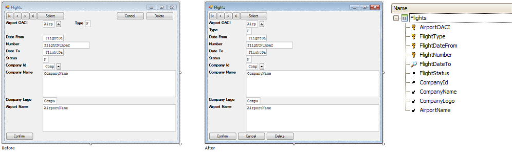

|
Restores the default form according to the transaction structure. Any changes done to the form controls will be lost. ExampleApplying the default form on a Windows form.  Scope
See also
Dynamism between Transaction and Pattern
|
| Backlinks | |
| Apply Defaults Option (for Win and Web forms) | RWA FAQ |
| Web Form Defaults property |